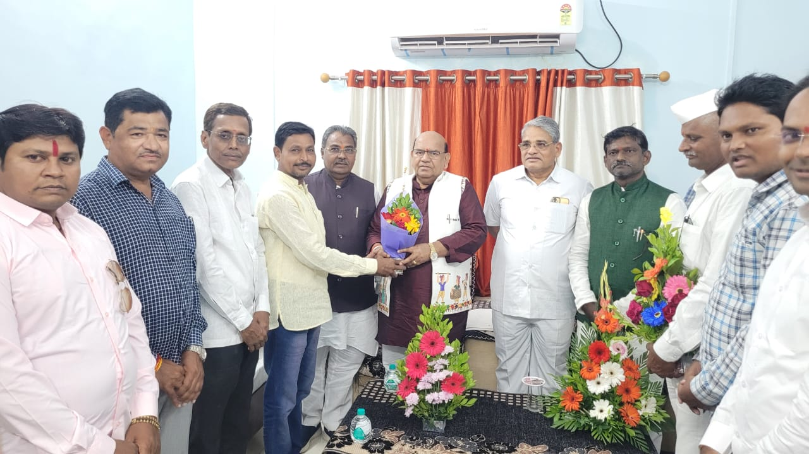

संस्कृती जनजागृती संस्था
"धर्मो रक्षति रक्षितः"
.jpeg)
आमच्याबद्दल
सस्नेह नमस्कार...
आपणांस आमंत्रित करण्यात येते की, भारतीय परंपरा, संस्कृती, विचारधारा अविरत प्रवाहित राहावी "यावदचंद्रोदिवाकरो" सनातन परंपरा वृद्धिंगत होत राहो तसे भारतीय समाजाची सेवा करता यावी या हेतूने, संस्कृती जनजागृती सेवाभावी संस्था शिरपूर जिल्हा धुळे या संस्थेची स्थापना केली असून विविध कार्ये हाती घेतली आहेत. या संस्थेच्या कार्याची माहिती व कार्यपद्धती खालीलप्रमाणे आहे.
संशोधन उद्देश्य:
- ● १. भारतीय समाजात हिंदू संस्कृतीची जनजागृती करणे.
- ● २. गोसेवा प्रयोग प्रारंभ करणे, गोशाळा स्थापन करणे.
- ● ३. शारीरिक स्वास्थ्य, सद्भभाव आणि समाजसेवेतून निवारा/पदार्थ दान करणे.
- ● ४. ग्रामपंचायतीमध्ये शारीरिक स्वास्थ्यासाठी औषध निर्मितीसाठी औषध निर्माण करणे, प्राथमिक दवाखाना, चिकित्सा केंद्र प्रमाणे शिक्षण देणे.
- ● ५. मानवी दुबळेपण, गो-गणेश, संवादयुती उपकारातर्फे, प्राथमिक डॉक्टर, पंचायत विचारचौथी चालविणे, योग निदान व चिकित्सा कार्यान्वयन करणे.
- ● ६. संपूर्ण भारतीय गोष्टींचा जतन करणं, त्यांचा संवर्धन करणे, गो विज्ञान केंद्र चालविणे.
- ● ७. भारतीय संस्कृतीचे संस्कार आणि संत विचारांच्या प्रयोगाचा प्रारंभ करणे, स्थानिकांना मदत करणे. तसेच अन्यथा चालविणे व रक्षणाची व्यवस्था करणे.
- ● ८. सार्वजनिक वाहतूक, पायी प्रवास, गोशाळा स्थापत्य आणि दवाखाना, फिरता दवाखाना तसेच औषधांचा व्यवसाय करणे. गाईच्या निगा तंत्रज्ञान व त्याचे प्रबंधन देणे. तसेच जयंती, हिंदू मंडळांनंतर रांगोळी स्पर्धा आयोजित करणे.
- ● ९. गावांमध्ये गो-सेवा करणे, आरोग्य क्षेत्रात मदत करणे, शिक्षण क्षेत्रात गरजूंना मदत करणे, बहुपर्यायी सेवा प्रदान करणे.
संस्थेचे उपक्रम आणि बातम्या

भारत माता की जय
26 जानेवारी 2026 रोजी, 77 वा, प्रजासत्ताक दिनानिमित्त संस्कृती जनजागृती सेवाभावी संस्था द्वारे भारत माता प्रतिमा पूजन करण्यात आले...
26 जानेवारी 2026 रोजी, *77 वा,प्रजासत्ताक दिनानिमित्त संस्कृती जनजागृती सेवाभावी संस्था द्वारे भारत माता प्रतिमा पूजन करण्यात आले, या प्रसंगी संस्थापक अध्यक्ष *रविंद्र भोई, उपाध्यक्ष बापू लोहार, सचिव मनिषा भोई, सदस्य चिराग पारधी, सदस्य राधेश्याम भोई, सदस्य विशाल पारधी सदस्य राजेश शिवदे, सदस्य भावेश लोहार, सदस्य गणेश साटोटे, हिमांशू भोई, आदी उपस्थित होते, जय हिंद जय भारत
26 जानेवारी 2026 रोजी, *77 वा,प्रजासत्ताक दिनानिमित्त संस्कृती जनजागृती सेवाभावी संस्था द्वारे भारत माता प्रतिमा पूजन करण्यात आले, या प्रसंगी संस्थापक अध्यक्ष *रविंद्र भोई, उपाध्यक्ष बापू लोहार, सचिव मनिषा भोई, सदस्य चिराग पारधी, सदस्य राधेश्याम भोई, सदस्य विशाल पारधी सदस्य राजेश शिवदे, सदस्य भावेश लोहार, सदस्य गणेश साटोटे, हिमांशू भोई, आदी उपस्थित होते, जय हिंद जय भारत
▶
Click to Play Video
अन्नदान शिबिर
२७ एप्रिल २०२४ रोजी शनि मंदिर परिसरात गरजूंना अन्नदान करण्यात आले. संस्कृती जनजागृती संस्थेच्या माध्यमातून सातत्याने असे उपक्रम राबवले जातात.

भावपूर्ण आदरांजली
स्वर्गिय अजित दादा पवार यांच्या निधनानिमित्त ३० जानेवारी २०२६ रोजी संस्थेच्या वतीने श्रद्धांजली अर्पण करण्यात आली...
शिरपूर जि.धुळे महाराष्ट्र राज्याचे उपमुख्यमंत्री स्वर्गिय अजित दादा पवार यांचे 28 जानेवारी 2026 वार बुधवार रोजी सकाळी 8 : 45 वाजेच्या सुमारास विमान अपघातात दुर्देवी दुखद निधन झाले, त्यांच्या सोबतच चार जणांचे ही दुखद निधन या विमान अपघातात झाले या सर्वांना 30 जानेवारी 2026 वार शुक्रवार रोजी, संध्याकाळी 5:00 वाजेला संस्कृती जनजागृती सेवाभावी संस्थेच्या वतीने भावपूर्ण श्रद्धांजली देण्यात आली, या प्रसंगी संस्थेचे संस्थापक अध्यक्ष रवींद्र भोई, उपाध्यक्ष बापू लोहार, गुरुजी चंपालाल जी पाटील, चेतन चौधरी सर, माळवे सर, विजय भोई, भैय्या भोई, विजय ढोले, यांनी नमन करून श्रद्धांजली दिली, आणि परमेश्वर त्यांच्या आत्म्यास शांती देवो अशी सर्वांनी मिळून परमेश्वर चरणी प्रार्थना केली....
शिरपूर जि.धुळे महाराष्ट्र राज्याचे उपमुख्यमंत्री स्वर्गिय अजित दादा पवार यांचे 28 जानेवारी 2026 वार बुधवार रोजी सकाळी 8 : 45 वाजेच्या सुमारास विमान अपघातात दुर्देवी दुखद निधन झाले, त्यांच्या सोबतच चार जणांचे ही दुखद निधन या विमान अपघातात झाले या सर्वांना 30 जानेवारी 2026 वार शुक्रवार रोजी, संध्याकाळी 5:00 वाजेला संस्कृती जनजागृती सेवाभावी संस्थेच्या वतीने भावपूर्ण श्रद्धांजली देण्यात आली, या प्रसंगी संस्थेचे संस्थापक अध्यक्ष रवींद्र भोई, उपाध्यक्ष बापू लोहार, गुरुजी चंपालाल जी पाटील, चेतन चौधरी सर, माळवे सर, विजय भोई, भैय्या भोई, विजय ढोले, यांनी नमन करून श्रद्धांजली दिली, आणि परमेश्वर त्यांच्या आत्म्यास शांती देवो अशी सर्वांनी मिळून परमेश्वर चरणी प्रार्थना केली....

अनुसूचित जनजाती आयोग भारत सरकार राष्ट्रीय अध्यक्ष ना. मा. दादासो. श्री. अंतरसिंह आर्य
*अनुसूचित जनजाती आयोग भारत सरकार राष्ट्रीय अध्यक्ष ना. मा. दादासो. श्री. अंतरसिंह आर्य यांच्या दि. ४ ऑगस्ट रोजी रेस्ट हाऊस शिरपूर येथे भाजपा भटके विमुक्त आघाडी प्रदेश उपाध्यक्ष रविंद्र भोई यांनी स्वागत सत्कार केला.
यावेळी शिरपूर विधानसभा आ. काशिराम दादा पावरा, धुळे भाजपा मा. जिल्हाध्यक्ष बबनराव चौधरी, धुळे भाजपा जिल्हा सरचिटणीस अरुण धोबी, शिरपुर भाजपा मा. तालुकाध्यक्ष किशोर माळी पदाधिकारी व कार्यकर्ते उपस्थित होते.*
यावेळी शिरपूर विधानसभा आ. काशिराम दादा पावरा, धुळे भाजपा मा. जिल्हाध्यक्ष बबनराव चौधरी, धुळे भाजपा जिल्हा सरचिटणीस अरुण धोबी, शिरपुर भाजपा मा. तालुकाध्यक्ष किशोर माळी पदाधिकारी व कार्यकर्ते उपस्थित होते.*

छत्रपती शिवाजी महाराज प्रतिमापूजन
शिरपूर --- खर्दे बु् येथे 19 फेब्रुवारी रोजी शिवजयंती निमित्ताने संस्कृती जनजागृती सेवाभावी संस्थेच्या वतीने हिंदवी स्वराज्याचे संस्थापक, अखंड राष्ट्राचे आपले आराध्य दैवत शिव छत्रपती शिवाजी महाराजांचे प्रतिमा पूजन करण्यात आले, पुजन नंतर जय भवानी जय शिवाजी चा जयघोष करण्यात आला, या प्रसंगी संस्थेचे संस्थापक रवींद्र भोई,उपाध्यक्ष बापू लोहार, सचिव मनिषा भोई, संस्थेचे पदाधिकारी राजेश्वर शिवदे, अशितोष वाडीले, चेतन चौधरी सर, नरेश मोरे, रवी मोरे, उमाकांत मोरे सर, रूपाली मोरे मॅडम,गणेश सोनार, आईसाहेब सुशिलाबाई भोई, वैष्णवी भोई, वेदिका भोई, हिमांशू भोई, आदी उपस्थित होते,

मा. ना. प्रा. राम शिंदे साहेब यांचा सत्कार
शिरपुर : महाराष्ट्र विधान परिषद सभापती मा. ना. प्रा. श्री. राम शिंदे साहेब यांचा दि. 7 मार्च 2026 रोजी तपनभाई मुकेशभाई पटेल मेमोरियल हॉस्पिटल व रिचर्स सेंटर, खर्दे बु. ता. शिरपूर येथे पाहणी दौरानिमित्त आले असता त्यावेऴी मा. ना. प्रा. श्री. राम शिंदे साहेब यांची भाजपा भटके विमुक्त आघाडी प्रदेश उपाध्यक्ष व संस्कृती जनजागृती सेवाभावी संस्थेचे संस्थापक अध्यक्ष रविंद्र भोई यांनी भेट घेऊन त्यांना भारत माता प्रतिमा देवुन स्वागत सत्कार केला. यावेऴी मान्यवर उपस्थित होते.

शिरपुरात फलक अनावरण
आ. काशिराम पावरा व धुळे भाजपा जिल्हाध्यक्ष बबनराव चौधरी यांच्या हस्ते संस्थेच्या फलकाचे अनावरण करण्यात आले.
.jpeg)
शिरपुरात फलक अनावरण
आ. काशिराम पावरा व धुळे भाजपा जिल्हाध्यक्ष बबनराव चौधरी यांच्या हस्ते संस्थेच्या फलकाचे अनावरण करण्यात आले.